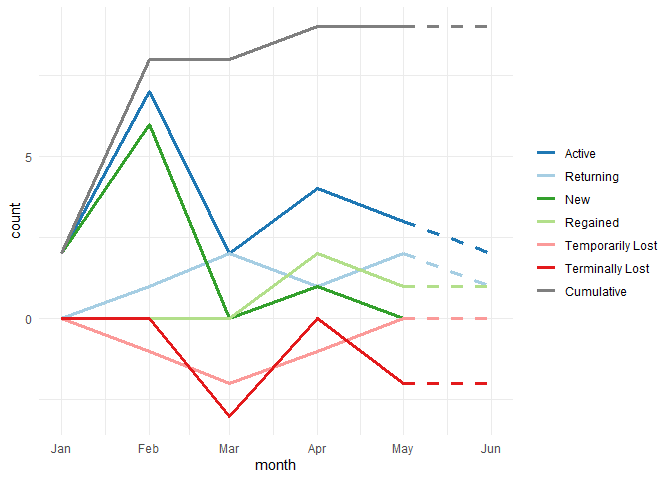
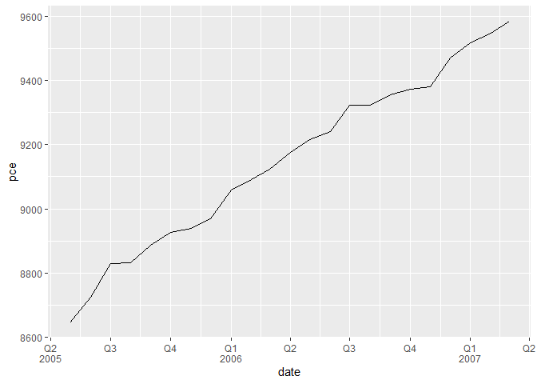
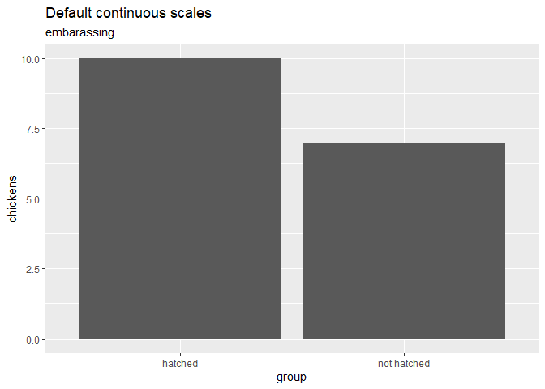
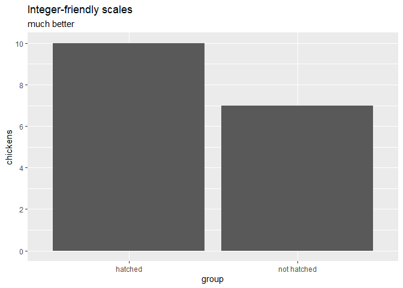

The goal of mcrutils is to provide a grab-bag of utility functions that I find useful in my own R projects for data cleaning, analysis, and reporting, including creating and visualizing year-to-date and quarterly analyses, and customer account status/churn analysis.
Installation
You can install the development version of mcrutils from GitHub with:
# install.packages("pak")
pak::pak("mcaselli/mcrutils")Examples
Data cleaning
For data frames or tibbles that have character or factor columns storing logical data, as may happen when reading from a database, CSV, or Excel file, use normalize_logicals() to find and convert these columns to logical type. This is a nice one-liner in a dplyr pipe
library(mcrutils)
library(dplyr, warn.conflicts = FALSE)
ugly_data <- tibble(
logical_char = c("T", "F", "T"),
logical_factor = factor(c("TRUE", "FALSE", "TRUE")),
non_logical_char = c("a", "b", "c"),
non_logical_factor = factor(c("x", "y", "z")),
mixed_char = c("T", "F", "a"),
mixed_factor = factor(c("TRUE", "FALSE", "x")),
numeric_col = c(1.1, 2.2, 3.3)
)
ugly_data |> normalize_logicals()
#> Converted "logical_char" and "logical_factor" columns to logical.
#> # A tibble: 3 × 7
#> logical_char logical_factor non_logical_char non_logical_factor mixed_char
#> <lgl> <lgl> <chr> <fct> <chr>
#> 1 TRUE TRUE a x T
#> 2 FALSE FALSE b y F
#> 3 TRUE TRUE c z a
#> # ℹ 2 more variables: mixed_factor <fct>, numeric_col <dbl>Customer account status/churn
accounts_by_status() takes order data (account IDs and order dates) and categorizes accounts into different statuses (new, returning, temporarily lost, regained, terminally lost) based on their order behavior in each time interval (months, weeks, quarters, etc are supported).
It also produces a running list of cumulative accounts. This function is useful for understanding customer retention and churn. (counts of accounts in each status category can be included as well; set with_counts = TRUE).
set.seed(1234)
n <- 25
dates <- seq(as.Date("2022-01-01"), as.Date("2022-06-30"), by = "day")
orders <- data.frame(
account_id = sample(letters[1:10], n, replace = TRUE),
order_date = sample(dates, n, replace = TRUE)
)
orders |> accounts_by_status(account_id, order_date)
#> period_start period_end active new returning
#> 1 2022-01-01 2022-01-31 b, h b, h
#> 2 2022-02-01 2022-02-28 b, c, d, e, f, i, j c, d, e, f, i, j b
#> 3 2022-03-01 2022-03-31 d, f d, f
#> 4 2022-04-01 2022-04-30 d, e, g, h g d
#> 5 2022-05-01 2022-05-31 e, f, h e, h
#> 6 2022-06-01 2022-06-30 f, j f
#> regained temporarily_lost terminally_lost cumulative
#> 1 b, h
#> 2 h b, h, c, d, e, f, i, j
#> 3 e, j b, c, i b, h, c, d, e, f, i, j
#> 4 e, h f b, h, c, d, e, f, i, j, g
#> 5 f d, g b, h, c, d, e, f, i, j, g
#> 6 j e, h b, h, c, d, e, f, i, j, gplot_accounts_by_status() creates a line plot of the count of each account status over time.
orders |>
plot_accounts_by_status(account_id, order_date)
CAGR
mutate_cagrs() adds columns with compound annual growth rates (CAGRs) for a vector of values over specified time periods, optionally grouped by one or more variables.
Here we’ll calculate the 1- and 2-year CAGR for revenue by market over a 3-year period.
sales <- data.frame(
year = rep(2020:2022, times = 2),
market = rep(c("APAC", "EMEA"), each = 3),
revenue = c(100, 110, 125, 100, 105, 114)
)
sales |>
mutate_cagrs(
values = revenue,
time_var = year,
group_vars = market,
periods = c(1:2)
)
#> # A tibble: 6 × 5
#> year market revenue revenue_cagr_1 revenue_cagr_2
#> <int> <chr> <dbl> <dbl> <dbl>
#> 1 2020 APAC 100 NA NA
#> 2 2021 APAC 110 0.100 NA
#> 3 2022 APAC 125 0.136 0.118
#> 4 2020 EMEA 100 NA NA
#> 5 2021 EMEA 105 0.0500 NA
#> 6 2022 EMEA 114 0.0857 0.0677Business days
periodic_bizdays() calculates the number of business days in each periodic interval (e.g., monthly, quarterly) between two dates, using calendars from QuantLib (see R package qlcal) for holiday definitions.
periodic_bizdays(
from = "2025-01-01",
to = "2025-12-31",
by = "quarter",
quantlib_calendars = c("UnitedStates", "UnitedKingdom")
)
#> # A tibble: 8 × 4
#> calendar start end business_days
#> <chr> <date> <date> <int>
#> 1 UnitedStates 2025-01-01 2025-03-31 61
#> 2 UnitedStates 2025-04-01 2025-06-30 63
#> 3 UnitedStates 2025-07-01 2025-09-30 64
#> 4 UnitedStates 2025-10-01 2025-12-31 62
#> 5 UnitedKingdom 2025-01-01 2025-03-31 63
#> 6 UnitedKingdom 2025-04-01 2025-06-30 61
#> 7 UnitedKingdom 2025-07-01 2025-09-30 65
#> 8 UnitedKingdom 2025-10-01 2025-12-31 64This is handy when analyzing data summarized by month or quarter and you want to adjust for business days in each period.
bizday_of_period() calculates the business day of the period (month, quarter, or year) for a given date and calendar.
bizday_of_period(as.Date("2025-06-17"), "UnitedStates", period = "month")
#> [1] 12
bizday_of_period(as.Date("2025-06-17"), "UnitedStates", period = "year")
#> [1] 116This is useful for creating a cumulative “burn-up” chart tracking mid-period progress against e.g. the prior year (See vignette(“mcrutils”) for an example).
Year-to-date helpers
mcrutils provides a handful functions that can be helpful in creating year-to-date analyses
Below we have 2.5 years of historical sales data ending on June 1, 2025.
set.seed(123)
sales <- tibble(
date = seq(
from = as.Date("2023-01-01"),
to = as.Date("2025-06-01"),
by = "month"
),
amount = rpois(30, lambda = 100)
)
head(sales)
#> # A tibble: 6 × 2
#> date amount
#> <date> <int>
#> 1 2023-01-01 94
#> 2 2023-02-01 111
#> 3 2023-03-01 83
#> 4 2023-04-01 101
#> 5 2023-05-01 117
#> 6 2023-06-01 104ytd_bounds() gets the start and end of the year-to-date period for the latest year in a vector of dates,
(bounds <- ytd_bounds(sales$date))
#> [1] "2025-01-01" "2025-06-01"and is_ytd_comparable() is a logical vector that indicates whether the dates in a vector are within a year-to-date period relative to a given end_date.
So we can quickly filter the historical data to see how we’re doing in 2025 compared to the same period (i.e. January - June) in 2023 and 2024:
one-line datatables
auto_dt() is a one-line function that creates a DT::datatable object from a data frame or tibble. It includes buttons to copy or download the data, filter tools, and no rownames. It applies percent, currency, and round formatting to numeric columns, guessing the correct format from the data and column names.
rename_cols_for_display() converts snake_case-like column names to title-case, with an option to preserve selected acronyms in uppercase.
tribble(
~market_name, ~ytd_revenue, ~cagr_pct, ~num_accounts,
"North", 1023.2456, 0.0512, 145,
"West", 150.2397, 0.1034, 28
) |>
rename_cols_for_display(all_caps = c("YTD", "CAGR")) |>
auto_dt(numeric_digits = 1, pct_digits = 0)
Quarterly breaks and labels
scales::label_date_short() is a great function for labeling dates in ggplot2, but unfortunately it can’t support quarterly breaks and labels out of the box.
label_quarters_short() generates similar labels for quarterly date breaks, labeling every quarter, but only including the year when it changes from the previous label. breaks_quarters() generates quarterly breaks for date scales.
library(ggplot2)
economics |>
filter(date >= "2005-05-01", date <= "2007-03-01") |>
ggplot(aes(date, pce)) +
geom_line() +
scale_x_date(
breaks = breaks_quarters(),
labels = label_quarters_short()
)
By default, breaks_quarters() tries to return a reasonable number of breaks over a wide range of dates, down-sampling to semesters and years as needed. See vignette("mcrutils") for more examples.
Integer-friendly continuous scales
The default breaks for continuous scales can include decimal values, e.g. when the range spanned by the data is small. These decimal values are often not appropriate with count data, so we provide scale_x_integer() and scale_y_integer(), which set breaks with floor(pretty()) and therefore guarantee integer break labels.
chicken_counts <- data.frame(
group = c("hatched", "not hatched"),
chickens = c(10, 7)
)
chicken_counts |>
ggplot(aes(group, chickens)) +
geom_col() +
labs(
title = "Default continuous scales",
subtitle = "embarassing"
)
chicken_counts |>
ggplot(aes(group, chickens)) +
geom_col() +
scale_y_integer() +
labs(
title = "Integer-friendly scales",
subtitle = "much better"
)